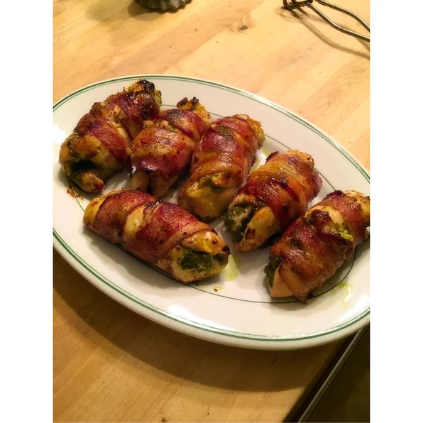

Bacon Wrapped Pesto Chicken

Chicken seasoned with pesto and wrapped in bacon. Makes enough for the whole family.
An easy recipe in which we first spread pesto over the chicken and then wrap in bacon.
Ingredients
- 6 skinless, boneless chicken breasts
- Salt and pepper
- 6 tablespoons of basil pesto
- 6 slices of bacon
- Half a cup of vegetable oil
- 6 toothpicks
Directions
- Preheat oven to 400 degrees fahrenheit
- Pound chicken flat. Sprinkle with salt and pepper to taste
- Spread pesto sauce over chicken breast
- Roll chicken breast into slice of bacon, secure rolls with toothpicks.
- Place rolled chicken breasts into baking dish
- Pour vegetable oil over chicken breasts
- Bake for about 30 minutes, check temperature for safety (160 degrees F)
Return to main page